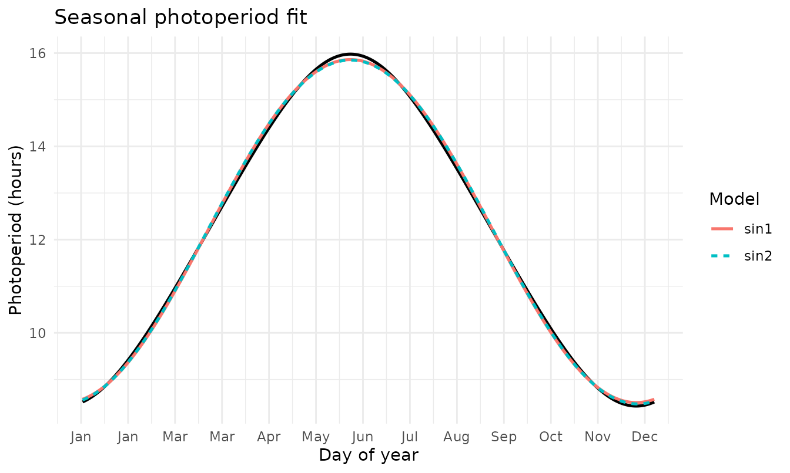
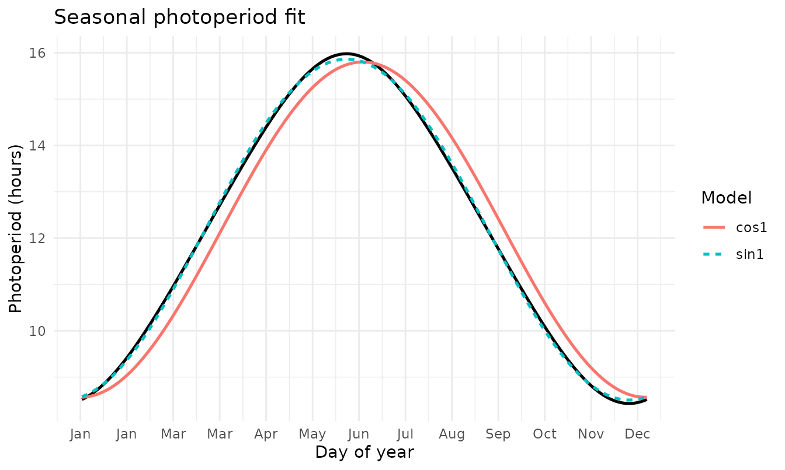

Overview
This vignette shows how to compute and use photoperiod (daylength)
with climecol. Functions are dependency-free and based on a
standard solar-geometry approximation (Forsythe et al., 1995), returning
hours of daylight from date and latitude only (timezone/longitude not
required).
You can work by latitude or by location keys (built-in sites).
Core functions:
-
daylength_f95(date, lat)— vectorized daylength (hours) for any dates & latitude -
photoperiod_year(year, lat = NULL, location = NULL, aggregate = c("none","month"))— daily or monthly photoperiod table for a given year -
photoperiod_sites()— named vector of built-in site latitudes (case/spacing/punctuation agnostic lookup)
Quick start: daily photoperiod by location
Compute daily photoperiod for St. John’s, NL (built-in key) for 2024:
pp_nl <- photoperiod_year(2024, location = "St John's")
head(pp_nl)
#> date daylength_hours lat location
#> 1 2024-01-01 8.517220 47.56 st_johns
#> 2 2024-01-02 8.532937 47.56 st_johns
#> 3 2024-01-03 8.549903 47.56 st_johns
#> 4 2024-01-04 8.568104 47.56 st_johns
#> 5 2024-01-05 8.587527 47.56 st_johns
#> 6 2024-01-06 8.608155 47.56 st_johnsPlot the annual cycle:
plot(pp_nl$date, pp_nl$daylength_hours, type = "l", lwd = 2,
xlab = "Date", ylab = "Daylength (hours)",
main = "Photoperiod — St. John's, NL (2024)")Monthly means:
pp_nl_m <- photoperiod_year(2024, location = "St John's", aggregate = "month")
pp_nl_m
#> date daylength_hours lat location
#> 1 2024-01-01 8.916550 47.56 st_johns
#> 2 2024-02-01 10.207203 47.56 st_johns
#> 3 2024-03-01 11.887952 47.56 st_johns
#> 4 2024-04-01 13.652182 47.56 st_johns
#> 5 2024-05-01 15.161088 47.56 st_johns
#> 6 2024-06-01 15.912512 47.56 st_johns
#> 7 2024-07-01 15.487501 47.56 st_johns
#> 8 2024-08-01 14.115072 47.56 st_johns
#> 9 2024-09-01 12.384641 47.56 st_johns
#> 10 2024-10-01 10.635663 47.56 st_johns
#> 11 2024-11-01 9.175674 47.56 st_johns
#> 12 2024-12-01 8.490440 47.56 st_johnsBy latitude (no location key)
You can compute daylength directly from latitude. Here’s 47.56°N (St. John’s latitude):
pp_lat <- photoperiod_year(2024, lat = 47.56)
head(pp_lat, 3)
#> date daylength_hours lat location
#> 1 2024-01-01 8.517220 47.56 lat_47.56
#> 2 2024-01-02 8.532937 47.56 lat_47.56
#> 3 2024-01-03 8.549903 47.56 lat_47.56Or call daylength_f95() for arbitrary dates:
dates <- as.Date("2024-06-15") + 0:6
daylength_f95(dates, lat = 47.56)
#> [1] 15.96054 15.96681 15.97168 15.97517 15.97726 15.97796 15.97725Built-in sites and normalization
photoperiod_sites() lists the convenience keys. The
location matching is forgiving:
“St John’s”, “st_johns”, “St.Johns” all resolve to st_johns. Likewise “Saint John” / “st john” resolve to saint_john.
photoperiod_sites()
#> st_johns saint_john kumasi nairobi cape_town ain_mahbel
#> 47.56 45.27 6.69 -1.29 -33.92 34.24Compare St. John’s (NL) vs Saint John (NB) monthly means:
pp_nl_m <- photoperiod_year(2024, location = "St John's", aggregate = "month")
pp_nb_m <- photoperiod_year(2024, location = "Saint John", aggregate = "month")
merge(pp_nl_m[, c("date","daylength_hours")],
pp_nb_m[, c("date","daylength_hours")],
by = "date", suffixes = c("_NL","_NB"))
#> date daylength_hours_NL daylength_hours_NB
#> 1 2024-01-01 8.916550 9.172983
#> 2 2024-02-01 10.207203 10.354056
#> 3 2024-03-01 11.887952 11.902529
#> 4 2024-04-01 13.652182 13.528932
#> 5 2024-05-01 15.161088 14.910968
#> 6 2024-06-01 15.912512 15.593079
#> 7 2024-07-01 15.487501 15.207900
#> 8 2024-08-01 14.115072 13.954218
#> 9 2024-09-01 12.384641 12.360833
#> 10 2024-10-01 10.635663 10.748119
#> 11 2024-11-01 9.175674 9.409230
#> 12 2024-12-01 8.490440 8.785616Fitting a smooth seasonal curve to photoperiod
fit_seasonal_photo() aggregates day-of-year across years
and fits simple periodic models (nonlinear least squares). You can use
built-ins (“sin1”, “sin2”) and/or supply custom formulas.
fit <- fit_seasonal_photo(
location = "St John's",
years = c(2023, 2024),
funcs = c("sin1","sin2"),
plot = TRUE
)
fit$metrics
#> # A tibble: 2 × 3
#> model AIC R2
#> <chr> <dbl> <dbl>
#> 1 sin1 -934. 0.999
#> 2 sin2 -943. 0.999
if (!is.null(fit$plot)) fit$plot
Custom model example
Define a cosine form and pass via custom:
fit_custom <- fit_seasonal_photo(
location = "St John's",
years = c(2023, 2024),
funcs = "sin1",
custom = list(
cos1 = list(
formula = avg_photo ~ a + b * cos(2*pi*day_of_year/365),
start = list(a = 12, b = 6)
)
),
plot = TRUE
)
fit_custom$metrics
#> # A tibble: 2 × 3
#> model AIC R2
#> <chr> <dbl> <dbl>
#> 1 sin1 -934. 0.999
#> 2 cos1 495. 0.967
if (!is.null(fit_custom$plot)) fit_custom$plot
Exporting photoperiod for modeling
Use export_weather() (adds metadata header) if you want
self-describing files.
out_csv <- file.path(tempdir(), "photoperiod_st_johns_2024.csv")
write.csv(pp_nl, out_csv, row.names = FALSE)
out_csv
#> [1] "/tmp/RtmpEU4mS9/photoperiod_st_johns_2024.csv"During vignette build we write to a temp directory. In your projects, write to your data folder (e.g., data/derived/…).
Notes & limitations
- Formula follows Forsythe et al. (1995) with standard sunrise/sunset refraction correction (-0.833°); suitable for most ecological modeling use-cases.
- Returns geometric daylength; ignores terrain shading, civil/nautical twilight, and atmospheric variability.
- If you pass lat (no location), the output uses a location label like lat_47.56 for clarity.